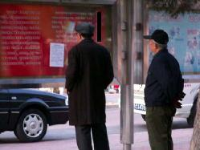

1/4/05 — Từ DAJIYUAN.COM
Kể từ khi Thời báo Đại Kỷ Nguyên công bố Cửu Bình —Chín bài bình luận về ĐCSTQ (Đảng cộng sản Trung Quốc)— tháng 11 năm ngoái tới nay, Cửu Bình đã loan truyền khắp nơi ở Trung Quốc, ngoài tầm kiểm soát của ĐCSTQ. Sau khi đọc Cửu Bình, và nhận ra bản chất tà ác của Đảng cộng sản Trung Quốc, ngày càng có nhiều người gia nhập làn sóng thoái đảng.
Ảnh: Các công bố thoái đảng trên phố Lijia, thành phố Đại Liên (ảnh của minghui.org)
Ngày 30/3, website MINGHUI.ORG báo cáo rằng đã có những công bố thoái đảng treo ngay ngoài đường phố thành phố Đại Liên, một thành phố lớn tại đông bắc Trung Quốc. Theo bài báo cáo, hai bản công bố xuất hiên vào đầu tuần. Một cái gần bãi đỗ xe nơi quảng trường công cộng Sanba, một cái ở bảng hiệu trên phố Lijia. Rất nhiều người dân đã chú ý và đọc những bản công bố này.

Ảnh: Công bố thoái xuất khỏi Đảng cộng sản Trung Quốc của một viên chức nhà nước dán ở bãi đỗ xe gần quảng trường công cộng Sanba.
Một người dân Đại Liên đã nói với ký giả MINGHUI.ORG rằng đã từng có một công bố thoái đảng như vậy được dán lên, nhưng nó đã bị xé đi trước khi anh ta được đọc nội dung. Anh ta nói rằng sau khi đọc Cửu Bình, anh ấy đã hiểu được tại sao ĐCSTQ phát động “bảo tiến” (một cuộc vận động của ĐCSTQ ở đó thúc đẩy người ta phải công khai thể hiện sự ủng hộ đảng). Anh ta thể hiện rằng anh ta cũng đã đăng công bố thoái đảng của mình trên website thoái đảng của tờ báo Đại Kỷ Nguyên (tuidang.dajiyuan.com).
Mặc dầu những công bố thẳng ra công chúng như thế này vẫn còn hiếm, nhưng theo người đưa tin, nó đánh dấu một sự khởi đầu quan trọng. Nó làm công chúng lưu tâm, sẽ có nhiều người hơn đọc Cửu Bình, và rồi sẽ có nhiều người thoái xuất khỏi ĐCSTQ. Ngày ĐCSTQ sụp đổ cũng sẽ không còn lâu.
{kind=link}
{kind=link}